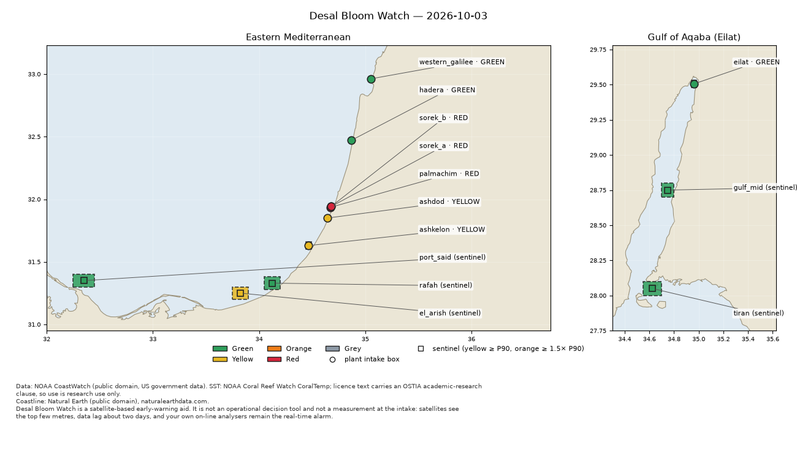

Desal Bloom Watch
A free morning report that warns when algae is building up in the sea in front of Israel's seawater desalination plants, from public NOAA satellite data.

What it does
Every morning
Reads satellite chlorophyll for the water at each plant's intake.
Against its own normal
Compares each plant with 6 years of its own history for that time of year.
Early hint upstream
Watches Port Said, El-Arish, Rafah and the Strait of Tiran, before a bloom drifts north.
Plain report
A coloured card per plant, a map and a short message, in English, Hebrew or Arabic.
Your computer
Runs on macOS, Linux or Windows. Optional Telegram message. No accounts, no AI calls.
8 plants
Western Galilee, Hadera, Sorek A and B, Palmachim, Ashdod, Ashkelon, Eilat.
The colours
- GreenWithin the normal range for this place and season.
- YellowAbove its usual seasonal high, or above normal and rising for 3 days.
- OrangeA seasonal extreme, or yellow with an upstream point already high.
- RedThree times the seasonal median or more, or orange two days running.
- GreyNo usable satellite view (clouds or old data). Grey is never an all-clear.
Get it running in 5 steps
- Install Python 3.11 or newer.
- Download the project: on GitHub, Code → Download ZIP, or
git clone https://github.com/Goomal/desal-bloom-watch.git cd desal-bloom-watch - Install it (macOS / Linux; Windows commands are in the README):
python3 -m venv .venv .venv/bin/pip install -e . - Answer a few questions (plants, folder, language, daily run, Telegram):
.venv/bin/dbw setup - Open
reports/dbw-report-<today>.html. From now on a new one arrives every morning.
Full guide, Windows commands, Telegram and troubleshooting: README on GitHub.
Know the limits
This is an early warning, not a measurement. The satellite sees only the top few metres of the sea, about 2 days late, in 4–9 km squares. Intakes draw from deeper water. The plant's own analysers stay the real alarm. Personal open-source project, no warranty.
בעברית
דוח בוקר חינמי שמתריע כשמצטברות אצות בים מול מתקני ההתפלה בישראל, על סמך נתוני לוויין פתוחים של NOAA. כל מתקן מושווה להיסטוריה שלו עצמו באותה עונה ומקבל צבע: ירוק, צהוב, כתום, אדום, או אפור כשאין תצפית שמישה. אפור אף פעם אינו "הכול תקין".
- התקינו Python בגרסה 3.11 ומעלה.
- הורידו את הפרויקט מ־GitHub (Code ← Download ZIP).
- בטרמינל, בתיקיית הפרויקט:
python3 -m venv .venvואז.venv/bin/pip install -e . - הריצו
.venv/bin/dbw setupובחרו מתקנים, תיקייה ושפהhe. - פתחו את קובץ ה־HTML בתיקיית
reports. מעכשיו מגיע דוח חדש כל בוקר.
זו התרעה מוקדמת, לא מדידה. המכשור של המתקן נשאר האזעקה האמיתית.